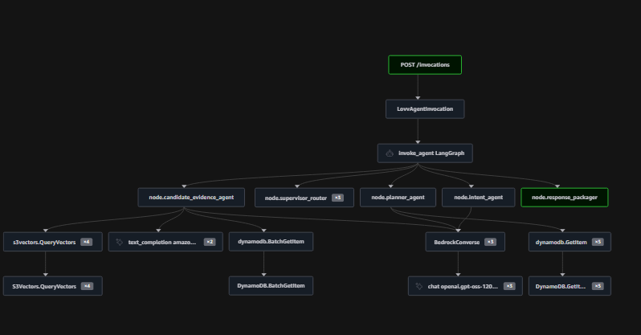
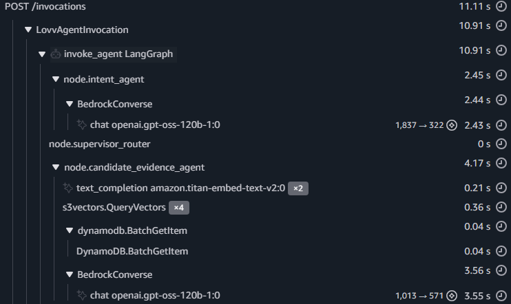
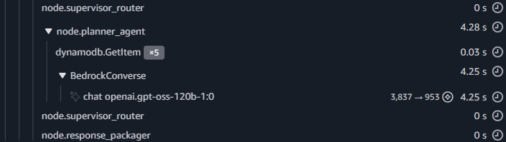

LovvAgentV1 테스트 계획서 & 결과 보고서
1. 개요
LovvAgentV1은 강원·경북 소도시 여행 추천 에이전트다. LangGraph 파이프라인(Intent → Supervisor → Candidate Evidence → Festival Verifier → Planner → Response Packager)을 AWS Bedrock AgentCore Runtime 위에서 실행한다.
본 보고서는 기능 정상성(설계된 출력이 정상적으로 나오는가) 과 비기능(실행시간·토큰·관측·무에러) 을 22개 테스트 케이스로 검증한 결과를 기록한다. 추천 품질 평가(어느 도시가 "더 좋은" 추천인가)는 본 범위 밖이다.
1.1 테스트 목적과 케이스 설계
목적. LovvAgentV1이 (1) 기능 요구사항 — 설계된 추천·일정·축제·예외 처리 출력이 정상적으로 나오는가, (2) 비기능 요구사항 — 응답시간·토큰 사용량·관측 가능성을 충족하는지 확인하고, 배포 런타임의 성능과 안정성(무에러·잘못된 입력 격리·후보 부족 시 열화 동작)을 검증한다. 추천 "품질"의 정답 평가(어느 도시가 더 적합한가)는 별도 평가셋이 필요한 V2 과제로 본 범위 밖이다.
평가 범위. 본 테스트는 추천 에이전트(LovvAgentV1) 만 대상으로 한다. 제품 요구사항(oh_my_documents/docs/01_requirements/)은 프론트엔드·온보딩·지도 화면·북마크·개인화 등 더 넓은 기능을 포함하나, 그것들은 에이전트 밖이라 본 보고서 대상이 아니다. 요구사항 문서가 비교적 개략적이므로, 각 케이스는 문서의 관련 요구사항(FR/NFR)에 근사 매핑하여 §4.1·§5.1에 표기한다.
케이스를 이렇게 세운 이유(왜 22개인가). "많이"가 아니라 에이전트가 실제로 갈라지는 모든 경로를 한 번씩 덮는 최소 구성을 목표로 했다.
- 진입 방식 3종 — 자연어 채팅 / 지도 마커(도시 고정) / 홈 추천. 각 진입이 서로 다른 내부 경로를 타므로 모두 포함. (관련: FR-MAP-007 마커→일정유형→축제→추천)
- 테마·기간 조합 — 단일·다중 테마 × 당일~2박3일. 도시 선정과 일정 구성이 조합마다 달라지므로 대표 조합을 골고루. (관련: FR-REC-001 입력 분류, FR-TRIP-001~004 일정 구성)
- 축제 포함/미포함 — 축제 검증·배치 경로를 별도로 검증. (관련: FR-FES-001, FR-FEST-ENTRY-001)
- 출발지 유무 — 출발지가 있으면 거리 반영 경로가 달라짐.
- 예외·열화 경로 — 후보 부족(축소 일정)·불가능한 조합(추천 불가)·잘못된 입력(안전 거부). 안정성과 폴백을 검증. (관련: NFR-005 폴백 제공)
1.2 테스트 환경
소프트웨어
| 항목 | 값 |
|---|---|
| 런타임 | LovvAgentV1 (AWS Bedrock AgentCore Runtime) |
| 런타임 ARN | ...:runtime/LovvAgentCore_LovvAgentV1-PumZyEGRsT |
| 리전 / Python | us-east-1 / 3.12 |
| 프레임워크 | LangGraph (상태 그래프 파이프라인) |
| LLM | openai.gpt-oss-120b-1:0 (전 노드 공통, reasoning_effort="low") |
| Embedding | amazon.titan-embed-text-v2:0 |
| 벡터 저장소 | S3 Vectors — lovv-agentcore-v1-vector / kr-agentcore-v1 |
| DB | DynamoDB — TourKoreaDomainData |
| Observability | OTel → ADOT Collector → X-Ray + CloudWatch |
하드웨어 / 인프라
| 항목 | 값 |
|---|---|
| 배포 런타임 | AWS Bedrock AgentCore — 관리형 서버리스(호출마다 격리된 실행 인스턴스 생성). CPU·메모리는 AWS가 관리하며 사양 비공개 |
| 런타임 구성 | Python 3.12, 공개 엔드포인트, 연결/읽기 타임아웃 60초 |
| 세션 모드 | 본 테스트는 호출마다 새 인스턴스 = 콜드 시작(요청 간 완전 격리). 워밍 재사용은 사용하지 않음 |
| 네트워크 | us-east-1 리전, 공개 엔드포인트 |
1.3 용어 안내 (약식)
평가자가 본문을 읽을 때 참고할 최소 용어다.
- 파이프라인 단계(노드): 의도 분석 → 단계 라우팅 → 후보 도시·장소 검색 → 축제 검증 → 일정 구성 → 응답 정리. (코드명: intent → supervisor → candidate_evidence → festival_verifier → planner → response_packager)
- 출력 상태값:
ok=정상 추천 /insufficient=후보 부족으로 축소 일정 /no_candidate=추천 불가(재질의) /END_WAIT_USER=사용자 재입력 대기. no_city_after_theme_gate: 요청 테마를 만족하는 도시가 하나도 없음(추천 불가 사유).- 콜드 시작: 요청마다 새 인스턴스를 띄우는 격리 실행(워밍 재사용보다 느림).
2. 테스트 전략 — 2-Path
기능과 비기능은 수집원이 다르다. 두 경로는 상호 보완이며 어느 하나로 전부를 대체할 수 없다.
| Path 1 — 로컬 e2e | Path 2 — 배포 텔레메트리 | |
|---|---|---|
| 도구 | capture_e2e_state.py --live | invoke_deployed_runtime.py → fetch_traces.py |
| 실행 | src 인-프로세스 (로컬) | 배포 클라우드 런타임 |
| 산출물 | e2e_state_dump_*.json (노드 내부 state) | X-Ray segment + AGENT_NODE_METRIC 로그 |
| 담는 것 | 추천 내용 (도시·status·축제·일정), 노드 방문 순서 | 서비스 콜 시간, 노드별 시간/토큰, 무에러 여부 |
| 못 담는 것 | 실행시간 (로컬값, 비대표) | 추천 내용 (마스킹/변환으로 소실) |
| 용도 | 기능 검증 (§4) | 비기능 검증 (§5) |
배포 런타임의 공개 응답·텔레메트리에는 마스킹 전 노드 state가 없다. 따라서 "어느 도시를 골랐고 무엇을 만들었는가"는 Path 1로만 증빙된다. 반대로 프로덕션 실행시간·X-Ray 관측은 Path 2로만 측정된다.
3. 실행 절차 & 화면
3.1 실행 명령
# Path 1 — 로컬 기능 캡처 (e2e state dump)
$env:LOVV_ENABLE_AWS_SMOKE='1'
uv run scripts/capture_e2e_state.py --live --input-dir docs/tasks/results/test_cases
# → docs/tasks/results/test_cases/results/e2e_state_dump_<NN>_<name>_<timestamp>.json (케이스당 1개)
# Path 2 — 배포 invoke 후 트레이스/로그 수집
uv run scripts/invoke_deployed_runtime.py --input-dir docs/tasks/results/test_cases
uv run scripts/fetch_traces.py --since-min 90 --profile skn26_final # 최근 트레이스 id 목록
uv run scripts/fetch_traces.py --summary docs/tasks/results/deployed_trace_ids.json \
--out docs/tasks/results/traces_fetched.json --raw --logs --profile skn26_final
3.2 AWS 콘솔 — 트레이스 확인 화면 (CloudWatch GenAI Observability / X-Ray)
아래 3장은 같은 한 요청(POST /invocations, 총 11.11s)의 콘솔 캡처다. 화면 1은 그 요청의 호출 경로(노드·서비스) 구조(trace map)이고, 화면 2·3은 같은 트레이스 타임라인을 상단·하단으로 나눈 것이다. §5(서비스 지연)·§9(구조적 한계)의 수치를 콘솔 원본으로 뒷받침한다.
[화면 1] Trace map — LovvAgentInvocation → invoke_agent LangGraph → 노드(intent / supervisor / candidate_evidence / planner / response_packager) → 서비스 서브콜(S3Vectors.QueryVectors, DynamoDB.BatchGetItem/GetItem, BedrockConverse). 파이프라인과 각 노드의 외부 호출 구조를 한눈에 보여준다.

[화면 2] Trace 상세 타임라인 — 상단 (intent → candidate_evidence) — node.intent_agent 2.45s(BedrockConverse 2.43s, 1837→322 tok), node.candidate_evidence_agent 4.17s 내부에 titan-embed ×2 0.21s · s3vectors.QueryVectors ×4 = 0.36s · DynamoDB.BatchGetItem 0.04s · BedrockConverse 3.56s. 검색·DB가 1초 미만(§5.2)이고 시간은 LLM에 쏠림을 콘솔에서 직접 확인.

[화면 3] 같은 타임라인 — 하단 (planner → packager) — node.planner_agent 4.28s 내부에 DynamoDB.GetItem ×5 = 0.03s(장소별 개별 조회 = N+1, §9 L2) · BedrockConverse 4.25s(3837→953 tok, 일정 설명 생성 = 단일 최대 병목, §9 L3). supervisor_router·response_packager 0s.

4. 기능 테스트 (Functional)
4.1 요구사항
"검증 기준"의 따옴표 값은 출력 상태값이다. (ok=정상 추천, insufficient=후보 부족→축소, no_candidate=추천 불가, 자세한 설명은 §4.3.)
| ID | 시나리오 | 검증 기준 | 관련 요구사항 | 대상 케이스 |
|---|---|---|---|---|
| FN-03 | 도시 발견·추천 정상 | 선택 도시 존재, 추천 장소 3개 이상, 상태 ok | FR-REC-001, FR-RAG-001/002 | 01–03, 05, 06, 08–10, 15, 17, 19–21 |
| FN-04 | 축제 포함 추천 | 축제 후보 수집 + 일정에 배치(또는 정당한 미배치) | FR-FES-001, FR-FEST-ENTRY-001 | 12, 13, 14, 16 |
| FN-05 | 일정 생성 | 일정 생성 + 일정 검증 통과 | FR-TRIP-001~004 | 정상 경로 전체 |
| FN-07 | 단계 라우팅 | 노드 방문 순서 = 설계 그래프 | FR-RAG-002 | 전 케이스 |
| FN-입력추출 | 앱/HTTP 래핑 입력 파싱 | 래핑된 요청 정상 추출 | FR-COM-001 | 15, 16 |
| FB-03 | 추천 불가(내륙 도시+해안 테마) | 상태 no_candidate + 사용자 재질의 | NFR-005 | 22 |
| FB-05 | 후보 부족 → 축소 일정 | 축소 일정 구성, 상태 insufficient | FR-TRIP-002 | 04, 07, 11 |
| FB-검증 | 잘못된 입력 안전 거부 | 입력 거부, 오류 미전파 | NFR-005 | 18 |
| SC-* | 출력 필수 필드 완전성 | 추천·일정·축제 출력의 필수 필드 존재 | FR-REC-003 | 전 케이스 |
| SF-FEST | 미확정 축제 배치 금지 | 날짜 미확정 축제는 일정에 넣지 않음 | FR-FES-001 | 12, 13, 14, 16 |
관련 요구사항은 제품 요구사항 문서(
oh_my_documents/docs/01_requirements/)의 ID에 근사 매핑한 것이다. 문서가 개략적이라 1:1 대응은 아니며, 매핑은 평가자 참고용이다.
4.2 결과 — 22 케이스 (Path 1, 로컬 e2e dump)
| # | 케이스 | 진입 | 상태 | 응답 | 축제 배치/미배치 | 선택 도시 |
|---|---|---|---|---|---|---|
| 01 | coast_quiet | chat | ok | completed | 0/0 | 삼척시 |
| 02 | coast_vibrant | chat | ok | completed | 0/0 | 강릉시 |
| 03 | nature_quiet | chat | ok | completed | 0/0 | 원주시 |
| 04 | nature_vibrant | chat | insufficient | completed | 0/0 | 원주시 |
| 05 | history | chat | ok | completed | 0/0 | 안동시 |
| 06 | art | chat | ok | completed | 0/0 | 강릉시 |
| 07 | healing | chat | insufficient | completed | 0/0 | 영양군 |
| 08 | nature+coast 3d2n | chat | ok | completed | 0/0 | 영덕군 |
| 09 | history+nature (서울) | chat | ok | completed | 0/0 | 고령군 |
| 10 | coast+healing daytrip (대구) | chat | ok | completed | 0/0 | 양양군 |
| 11 | home nature+healing 3d2n (서울) | home_rec | insufficient | completed | 0/0 | 영양군 |
| 12 | history + festival | chat | ok | completed | 0/1 | 성주군 |
| 13 | sea + festival | chat | ok | completed | 1/0 | 강릉시 |
| 14 | map_marker(경주) history + festival | map_marker | ok | completed | 1/0 | 경주시 |
| 15 | wrapped(agentcore) history+art | wrap | ok | completed | 0/0 | 강릉시 |
| 16 | wrapped(http) nature + festival | wrap | ok | completed | 1/0 | 평창군 |
| 17 | rare combo art+healing | chat | ok | completed | 0/0 | 인제군 |
| 18 | invalid map_marker (destinationId 누락) | map_marker | – | END_WAIT_USER | 0/0 | – (안전 거부) |
| 19 | intent short query | chat | ok | completed | 0/0 | 동해시 |
| 20 | intent long complex query | chat | ok | completed | 0/0 | 울진군 |
| 21 | map_marker(경주) history (no festival) | map_marker | ok | completed | 0/0 | 경주시 |
| 22 | no_candidate (내륙 영양 + 해안) | map_marker | no_candidate | END_WAIT_USER | 0/0 | – (no_city_after_theme_gate) |
4.3 Fallback / 예외 경로 정리
정상(ok) 외 경로를 유형별로 분리한다. 전부 에러가 아니라 설계된 안전 동작이며 실행 자체는 성공(노드 status=success)이다.
| 유형 | 케이스 | 트리거 | 동작 | 응답 |
|---|---|---|---|---|
| 축소 일정 (insufficient_candidates) | 04, 07, 11 | 도시는 찾았으나 후보 < 필요 일정 수 | 가능 범위로 축소 일정 + userNotice | completed |
| 축제 미배치 (게이트) | 12 | 축제 날짜가 여행기간과 불일치 | 도시 ok, 축제만 미배치(없는 사실 배치 안 함) | completed |
| no_candidate (재질의) | 22 | 테마 게이트 통과 도시 0 | 추천 생성 안 함, 사용자 재질의 요청 | END_WAIT_USER |
| validation 거부 (안전 격리) | 18 | 스키마 위반 입력(destinationId 누락) | intent 단계 조기 거부, LLM 미호출 | END_WAIT_USER |
세부:
- 04 / 07 / 11 (축소): 04 원주 recommended 4 < 필요 5 · 07 영양 2 < 5 · 11 영양 6 < 8. 모두 userNotice
"후보 수가 적어 가능한 범위에서 축소 일정을 구성했습니다."포함, 일정은 정상 생성(각 2·1·2일). - 12 (축제 skip): 성주 ok, festival_skipped=1. 미확정 축제를 확정 일정에 끼워넣지 않는 게이트 동작(SF-FEST).
- 22 (no_candidate): failure_signal=
no_city_after_theme_gate, 일정 없음. - 18 (거부): 일정 없음, 토큰 0 — 오류가 다음 단계로 번지지 않음.
4.4 단계별 대표 테스트 케이스 (정식 TC)
각 경로의 대표 케이스를 전제 → 입력 → 실행 단계 → 기대 결과 → 실측 결과 → 판정 양식으로 기술한다. 실행 단계는 LangGraph 파이프라인 노드 진행을 따른다.
TC-14 — 앵커 + 축제 (핵심 복합 경로)
| 구분 | 내용 |
|---|---|
| 전제 | 데이터에 경주(KR-47-130) 및 2026-10월 신라문화제 적재. map_marker 진입 |
| 입력 | entryType=map_marker, destinationId=경주, themes=[history], tripType=daytrip, includeFestivals=true, travelMonth=10 |
| 실행 단계 | ① 의도 분석: 도시 고정(anchored) 모드 확정 → ② 단계 라우팅 → ③ 후보 검색: 경주로 한정한 벡터검색(50개 후보) + 축제 후보 수집 → ④ 축제 검증: 신라문화제 날짜 확정 → ⑤ 일정 구성: 일정 배치 + 축제 삽입 → ⑥ 응답 정리 |
| 기대 결과 | status=ok, 선택 도시=경주, 축제 placed=1, 응답 completed |
| 실측 결과 | status=ok, 경주시(city_score 2.9163), recommended 6, 신라문화제(FEST-1718137, 10-09~11) placed 1/skip 0, 1일차 첫 항목=경주역사유적지구, completed |
| 판정 | Pass — 도시 고정 + 축제 검증·배치가 한 요청에서 동시에 정상 동작 |
TC-13 — 축제 정상 배치 (발견 + 축제)
| 구분 | 내용 |
|---|---|
| 전제 | 해당 월 해안 도시에 축제 적재 |
| 입력 | entryType=chat, themes=[sea_coast], tripType=2d1n, includeFestivals=true |
| 실행 단계 | ① 의도 분석(축제 시드 모드) → ② 축제 보유 도시로 검색 범위 제한 → ③ 도시 선택 → ④ 축제 검증(날짜 확정) → ⑤ 일정에 축제 삽입 |
| 기대 결과 | status=ok, 축제 placed=1, 일정 2일 |
| 실측 결과 | status=ok, 강릉시(2.7714), recommended 8, 강릉비치비어페스티벌 placed 1, 2일, completed |
| 판정 | Pass |
TC-05 — 단일 테마 정상 (발견)
| 구분 | 내용 |
|---|---|
| 전제 | 역사 테마 풍부 도시(안동) 적재 |
| 입력 | entryType=chat, themes=[history], tripType=2d1n, includeFestivals=false |
| 실행 단계 | ① 의도 분석(역사 테마 추출) → ② 전역 벡터검색 → ③ 도시 점수화·선택 → ④ 일정 구성 |
| 기대 결과 | status=ok, 역사 정합 도시, recommended ≥ 3 |
| 실측 결과 | status=ok, 안동시(2.4734), retrieved 50 → recommended 10, 일정 2일 |
| 판정 | Pass — 단일 역사 테마 → 안동(테마-도시 정합) |
TC-22 — no_candidate (열화 경로 / 안정성)
| 구분 | 내용 |
|---|---|
| 전제 | 영양(KR-Yeongyang)은 내륙(해안 없음). map_marker 진입 |
| 입력 | entryType=map_marker, destinationId=영양, themes=[sea_coast], tripType=daytrip |
| 실행 단계 | ① 의도 분석(도시 고정 모드) → ② 후보 검색: 영양 내 해안 관광지 검색 → 테마 조건 통과 도시 0 → 추천 불가 처리 |
| 기대 결과 | status=no_candidate, failure_signal=no_city_after_theme_gate, 재질의 |
| 실측 결과 | status=no_candidate, failure=no_city_after_theme_gate, needs_clarification=true, 응답 END_WAIT_USER |
| 판정 | Pass — 불가능 조합을 환각 없이 안전 거부 + 재질의 |
TC-18 — validation negative (입력 검증 / 안정성)
| 구분 | 내용 |
|---|---|
| 전제 | map_marker는 destinationId 필수 |
| 입력 | entryType=map_marker, destinationId 누락, themes=[sea_coast], tripType=daytrip |
| 실행 단계 | ① 의도 분석: 입력 검증 실패 감지 → 조기 거부(LLM 미호출) → ② 단계 라우팅 → ⑥ 응답 정리 |
| 기대 결과 | 안전 거부, 에러 미전파, 응답 END_WAIT_USER |
| 실측 결과 | 거부 처리, 응답 END_WAIT_USER, 텔레메트리 3노드·토큰 0(LLM 미호출 조기 거부) |
| 판정 | Pass — 잘못된 입력이 하류로 전파되지 않고 intent 단계 격리 |
4.5 판정
| 요구사항 | 결과 |
|---|---|
| FN-03 도시 발견 | Pass — 정상 케이스 전부 status=ok, selected_city·recommended_places 존재 |
| FN-04 축제 | Pass — 13·14·16 일정 배치(placed=1), 12 정당한 skip(§4.3) |
| FN-07 라우팅 | Pass — 축제 검증 노드가 축제 포함 요청(12·13·14·16)에서만 실행, 그 외 미실행 |
| FN-입력추출 | Pass — 15(agentcore), 16(http) wrapper 정상 |
| FB-03 no_candidate | Pass — 22: status=no_candidate, failure_signal=no_city_after_theme_gate |
| FB-05 insufficient | Pass — 04·07·11 status=insufficient, 응답 완료(축소 경로) |
| FB-검증 negative | Pass — 18: 안전 거부(END_WAIT_USER), 에러 미전파 |
| SC-* 스키마 계약 | Pass — 전 케이스 CE 패키지·Planner·축제 필수 필드 완전 |
| SF-FEST 축제 게이트 | Pass — 미배치 축제는 모두 게이트 skip, 환각 배치 0 |
| 에러율 | Pass — 정상 시나리오 status=error 0 |
기능 결론: 22/22 Pass.
4.6 후속 관찰 (실패 아님 — V2 참고)
- 12번 축제 0/1 (skip): 4개 축제 케이스 중 유일하게 미배치. 게이트에 의한 정당한 skip으로 보이나 date_status 근거 1건 확인 권장.
- 17번: fixture 설계상 기대는 clarify/no_candidate였으나 실제 ok(인제군). 해당 조합이 실제로 후보가 존재 → 테스트 플랜의 17 기대값 재조정 필요.
- 10번: 대구 출발 daytrip인데 양양군(원거리 강원) 선택 — 거리 가중 동작 점검 대상.
- 04 vs 03: nature 테마에서 두 변형이 동일 도시(원주) 선택.
4.7 예시 — e2e dump 원본 (Path 1)
[14번 — 정상 + 축제]
{
"status": "ok",
"selected_city": { "city_id": "KR-47-130", "city_name_ko": "경주시", "city_score": 2.9163 },
"counts": { "retrieved": 50, "scored": 50, "recommended_places": 6, "required_itinerary_places": 3 },
"festival": { "festival_id": "FEST-1718137", "name": "신라문화제",
"event_start_date": "2026-10-09", "event_end_date": "2026-10-11" },
"festival_validation": { "placed": 1, "skipped": 0 },
"itinerary_day1_item1": { "title": "경주역사유적지구 [유네스코 세계유산]", "contentId": "attraction#971032" },
"response_status": "completed"
}
[22번 — no_candidate]
{
"status": "no_candidate",
"failure_signals": ["no_city_after_theme_gate"],
"needs_clarification": true,
"response_status": "END_WAIT_USER"
}
5. 비기능 테스트 (Non-Functional)
5.1 요구사항
| ID | 측정 | 검증 기준 | 관련 요구사항 |
|---|---|---|---|
| NF-LAT-svc | 벡터검색·DB 콜 지연 | 데이터 서비스 콜이 1초 내 완료 | NFR-001C (벡터검색 1초 이내) |
| NF-LAT-ceil | 전체 요청 응답시간 | 기준값 기록 (요구사항 8초와 대조) | NFR-001B (에이전트 8초 이내) |
| NF-TOKEN | 요청당 토큰 사용량 | 노드별·요청당 토큰 기록 | — |
| OB-01 | 노드 메트릭 로그 스키마 | 요청ID·노드명·소요시간·상태·토큰 필드 존재 | NFR(관측) |
| OB-에러 | 에러율 | 정상 시나리오에서 오류 0 | NFR(안정성) |
수집: 배포 런타임 22 케이스 호출 → X-Ray 트레이스 + CloudWatch 노드 메트릭 로그. 헬스체크(/ping) 스팬은 집계에서 제외.
집계 대상 명확화: 22 호출 전부 실행 성공(노드 status=success, X-Ray fault 0)이라 "성공분만 골라 잰" 게 아니라 실패한 콜이 0개여서 제외할 것이 없었다. fallback 케이스(04·07·11 insufficient, 22 no_candidate, 18 reject)도 실행 성공이므로 그 콜이 모두 집계에 포함된다. 단 18번(validation 거부)은 검색 이전 intent 단계에서 거부돼 S3Vectors/DynamoDB를 호출하지 않았다 → 필터링이 아니라 호출 자체가 없어서 서비스-콜 보유 트레이스는 21개다.
5.2 결과 — 서비스 콜 지연 (X-Ray, 22 케이스 전수)
X-Ray 하위 구간 소요시간(네트워크 포함 실제 왕복). 평균 포함, 단위 = 초.
| 서비스 | 콜 수 | mean | min | median | p90 | max |
|---|---|---|---|---|---|---|
| DynamoDB | 118 | 0.011 | 0.003 | 0.005 | 0.038 | 0.058 |
| S3Vectors | 56 | 0.092 | 0.064 | 0.089 | 0.119 | 0.127 |
| BedrockRuntime (LLM) | 100 | 2.906 | 0.079 | 1.604 | 8.514 | 15.719 |
판정 (NF-LAT-svc): Pass. DynamoDB 평균 11ms·최악 58ms, S3Vectors 평균 92ms·최악 127ms — 단 한 콜도 1초를 넘지 않는다(목표 압도적 충족). 검색·DB는 무시할 수준이고, 요청 시간은 사실상 전부 LLM(BedrockRuntime, 평균 2.9초/콜) 이 차지한다. → 최적화 대상은 검색/DB가 아니라 LLM 호출(특히 일정 설명 생성).
5.3 결과 — 전체 요청 응답시간 (22 케이스)
| 지표 | 값 |
|---|---|
| 평균 | 13.8s |
| 중앙값 | 15.7s |
| 최대 | 20.4s |
요구사항 NFR-001B(에이전트 8초 이내) 대조. 본 측정은 호출마다 새 세션 = 콜드 인스턴스(요청 간 격리) 조건이라 중앙값 15.7s로 8초 목표를 초과한다. 초과분은 거의 전부 LLM 생성 시간(특히 일정 설명 생성)이며 검색·DB는 1초 미만(§5.2)이다. 즉 벡터검색 요구(NFR-001C 1초)는 충족, 전체 응답 요구(NFR-001B 8초)는 콜드 기준 미달이다. 워밍 인스턴스 재사용 시 단축 여지가 있으나 본 라운드 미측정. → LLM 호출 최적화가 8초 목표 달성의 핵심 과제(§9).
5.4 결과 — 노드/토큰 (CloudWatch AGENT_NODE_METRIC, 22 케이스)
요청당 노드 실행 수·토큰 합 (발췌, 전 케이스 실패 0).
| case | 노드 수 | 실패 | 축제 검증 | 토큰 합 |
|---|---|---|---|---|
| 01 coast_quiet | 7 | 0 | – | 8,131 |
| 05 history | 7 | 0 | – | 9,051 |
| 14 anchor+festival | 9 | 0 | ✓ | 7,299 |
| 16 wrap+festival | 9 | 0 | ✓ | 7,564 |
| 18 invalid | 3 | 0 | – | 0 |
| 20 long query | 7 | 0 | – | 9,415 |
| 22 no_candidate | 5 | 0 | – | 2,038 |
관측: 토큰 2,038(22, 축소)–9,415(20, 긴 쿼리). 18(입력 거부)은 토큰 0 — LLM 미호출 조기 거부. 22(추천 불가)는 5노드로 축소. 축제 케이스(12·13·14·16)만 9노드(축제 검증 포함) → 라우팅 정확성의 텔레메트리 증거.
5.5 결과 — 운영/관측
| 항목 | 결과 |
|---|---|
| HTTP 200 | 22/22 (invoke 응답) |
X-Ray hasError | 전 케이스 트레이스 false (오류 0) |
| 노드 status | 전 케이스 전 노드 success (fail 0) |
| OB-01 스키마 | AGENT_NODE_METRIC requestId·nodeName·durationMs·status·llmMetrics 전부 존재 |
/ping 분리 | 집계에서 정상 제외 |
판정 (OB-에러): Pass. 22 케이스 invoke 전수에서 fault·node error 0.
5.6 예시 — X-Ray trace 원본 (Path 2)
단일 요청의 segment 분해 (trace 1-6a403501-..., 총 17.997s, 단위 초). 콘솔 타임라인은 §3.2 [화면 2·3] 참조(별도 샘플 트레이스, 총 11.11s).
LovvAgentCore_LovvAgentV1.DEFAULT 17.997 (root / 요청 전체)
BedrockRuntime 9.982 ← LLM
BedrockRuntime 6.234 ← LLM
BedrockRuntime 1.116 ← LLM
S3Vectors 0.115
BedrockRuntime 0.105
BedrockRuntime 0.083
S3Vectors 0.070
DynamoDB 0.041
DynamoDB 0.005
DynamoDB 0.004
DynamoDB 0.004
DynamoDB 0.004
→ 전체 시간의 거의 100%가 BedrockRuntime(LLM). S3Vectors·DynamoDB는 합쳐도 0.4초 미만.
AGENT_NODE_METRIC 로그 1건 (노드 메트릭 스키마):
{"requestId":"REQ-TC-01","logType":"AGENT_NODE_METRIC","nodeName":"intent_agent",
"durationMs":2502,"status":"success",
"inputSummary":{"themes":["sea_coast"],"tripType":"2d1n","includeFestivals":false,"queryLength":60},
"llmMetrics":{"modelId":"openai.gpt-oss-120b-1:0","inputTokens":1814,"outputTokens":254,
"totalTokens":2068,"contextUsagePercent":1.034}}
6. 모델링 평가 결과 (동작·관측 기반)
LovvAgentV1은 학습된 단일 모델이 아니라 LLM(gpt-oss-120b) + 임베딩(titan) + 결정론 로직의 합성 파이프라인이다. 따라서 "모델링 평가"는 추천 품질의 정답 비교가 아니라, 각 모델 구성요소의 동작·관측 지표로 수행한다(품질 oracle 평가는 §8 한계 참조, V2 과제).
6.1 구성요소별 동작 평가
| 구성요소 | 평가 지표 | 실측 (22 케이스) | 판정 |
|---|---|---|---|
| 의도 분석 LLM | 실행 모드 결정·테마 추출·분위기 신호 | 진입별 모드 정확(도시 고정/발견/축제), 분위기 없으면 빈 값(지어내지 않음) | 정상 |
| Embedding (titan) | 테마별 임베딩 호출 | 테마당 ×2(raw+soft), 검색 입력 정상 | 정상 |
| 검색 (S3Vectors) | retrieved 후보 수 | 테마당 50 retrieved, 도시 스코어링 입력 | 정상 |
| 도시 스코어링·선택 | 상태·선택 도시 | 정상 추천 17 / 축소 3 / 추천 불가 1 / 입력 거부 1, 선택 도시 모두 강원·경북 | 정상 |
| 축제 검증 | 날짜 검증·배치 정책 | 12·13·14·16에서만 실행, 날짜 확정 축제만 배치, 미확정은 제외 | 정상 |
| 일정 생성(Planner LLM) | 일정·설명 생성 | 일정 생성 완료, 설명 텍스트 생성(요청당 최대 ~9.4k 토큰) | 정상 |
혼잡도 반영. 혼잡도 신호에 따라 선택 도시가 달라진다 — 같은 해안 테마라도 "조용한"(케이스 01)은 한적한 삼척, "활기찬"(케이스 02)은 붐비는 강릉이 선택된다.
6.2 라우팅·안정성 평가
- 라우팅 정확성: 축제 검증 노드가 축제 포함 요청(12·13·14·16)에서만 실행(9노드), 그 외 7노드. 18(검증 거부)=3노드·토큰 0, 22(추천 불가)=5노드 축소 — 입력 유형별 분기가 텔레메트리로 정확히 확인됨.
- 결정론 비중(재현성): 도시 선택·일정 배치·라우팅은 전부 결정론이고 LLM은 (intent 신호 / 추천 근거 / planner 카피) 3군데로 제한 → 동일 입력 재현성·안정성 확보.
- 안정성: 22 케이스 전 노드 정상(success), 오류 0, HTTP 200 22/22. 비정상·불가 입력(18·22)도 멈춤 없이 안전 거부. 예외 4종(축소·축제 미배치·추천 불가·검증 거부)을 단계적으로 열화 처리.
- 자원 여유: context usage <2% (예: intent 1.034%), 토큰 요청당 2,038~9,415 — 컨텍스트 한도 대비 충분한 여유.
6.3 추천 충실도 — 테마 커버리지 & 일정 충족
테스트 케이스 입력으로 직접 측정 가능한 두 지표로 추천 충실도를 평가한다.
(1) 테마 커버리지 — 선택 도시가 요청 테마를 모두 포함하는가.
추천이 생성된 20개 케이스 전부에서 선택 도시의 테마 커버리지 = 1.0 — 즉 사용자가 고른 모든 테마에 대해 그 도시에 장소가 존재한다. 다중 테마도 100%다: 3테마(20번 자연+해안+역사) 선택 도시 울진 1.0, 2테마(10번 해안+힐링) 양양 1.0. 다중 테마의 테마 균형(엔트로피) 점수도 0.92~0.94로 높아 한 테마에 쏠리지 않는다.
- 부분 커버리지 도시(예: 20번 영덕 3분의 2, 10번 경주 2분의 1)는 순위엔 오르지만 선택되지 않는다 → 선택 도시는 항상 완전 커버리지.
- 한계: 이 지표는 도시 단위(그 도시가 모든 테마의 장소를 보유) 측정이다. 최종 일정의 각 슬롯까지 테마가 1:1로 분배되는지는 후보 선택의 테마 쿼터에 따르며, 본 지표는 도시 단위까지 보증한다.
(2) 일정 충족 — 필요한 일정 칸을 채웠는가.
| 결과 | 케이스 수 | 비율 |
|---|---|---|
| 충족 (정상 일정) | 17 | 일정 생성 20건 중 85% |
| 부족 (축소 일정) | 3 (04·07·11) | 15% |
| 추천 불가·거부 (일정 없음) | 2 (18·22) | — |
도시 선택 규칙과 축소 발생 비율. 선택 로직은 일정을 채울 수 있는 가장 높은 순위의 도시를 고른다 — 1위가 부족하면 2위·3위를 순차로 시도하고, 어느 도시도 못 채울 때만 1위를 그대로 두고 축소 일정을 만든다(selection_reason_code로 확인).
- 도시를 탐색한 18개 케이스(지도 마커로 고정한 14·21 제외)에서 선택된 도시는 전부 점수 1위였다. 17건은 1위가 일정을 채워 정상, 3건(04·07·11, 16.7%)은 모든 후보 도시가 미충족이라 1위 강제 + 축소(
city_score_rank_1+insufficient_candidates). - 즉 "1위는 부족한데 하위 도시는 충분"해서 차순위로 갈아타는 경우는 22개 케이스에서 발생하지 않았다(차순위 선택 로직 자체는 존재하나 이번 입력셋에선 트리거되지 않음).
- 도시 고정(앵커) 케이스(14·21)는 순위 선택을 거치지 않으며 둘 다 충족.
- 한계(중요): 모든 후보 도시가 일정을 못 채우면(3건이 이 경우) V1은 축소 일정을 보여주는 것 외의 대안이 없다. 부족분을 대체 장소로 보충하는 경로가 없어, 가능한 범위로 일정을 줄이고 "후보 수가 적어 축소 일정을 구성했습니다" 안내만 제공한다. 데이터 풀이 강원·경북 소도시로 한정돼 일부 테마·기간 조합에서 어느 도시도 후보가 얕은 것이 근본 원인이다.
6.4 모델링 평가 종합
동작·관측 관점에서 모델 구성요소 전부 정상 거동하고(intent·검색·스코어링·축제 검증·일정 생성), 라우팅은 입력 유형별로 정확하며, 22 케이스 무에러로 안정적이다. 충실도 면에서 선택 도시는 요청 테마를 100% 포함하고, 일정의 85%가 정상 충족된다. 남은 약점은 후보가 부족할 때 축소 일정 외 대안이 없다는 점(§6.3·§8)이다.
7. 종합 판정
| 영역 | 케이스 | 결과 |
|---|---|---|
| 기능 | 22 | 22/22 Pass |
| 비기능 — 벡터검색·DB 지연 (NFR-001C) | 22 | Pass (전 콜 1초 미만) |
| 비기능 — 전체 응답시간 (NFR-001B 8초) | 22 | 미달 (콜드 기준 중앙값 15.7s, 원인=LLM 생성) |
| 비기능 — 운영·관측·안정성 | 22 | Pass (오류 0, 노드 전부 성공, 메트릭 완전) |
기능은 22/22 통과, 안정성도 무에러다(정상·축제·앵커·추천불가·입력거부·축소 일정 경로 모두 설계대로). 비기능은 벡터검색·DB 지연(1초 요구)은 압도적 충족하나, 전체 응답시간 8초 요구는 콜드 인스턴스 기준 미달(15.7s) — 초과분은 LLM 생성 시간이며 워밍 재사용·LLM 최적화가 후속 과제다(§9).
8. 한계 / V2 참고
8.1 요구사항 대비 미구현 기능 (제품 문서엔 있으나 V1 에이전트 미구현)
제품 요구사항에 명시됐으나 V1 추천 에이전트가 아직 구현하지 않은 기능이다. 평가 시 "범위 외"임을 명확히 한다.
| 미구현 기능 | 관련 요구사항 | 설명 |
|---|---|---|
| 대체(대안) 일정 추천 | FR-REC-002 | 수집된 월별 날씨 경향을 활용한 대체 일정(우천 대비 등) 미제공. 단일 일정만 생성 |
| 우천 대체 일정 팝업 | FR-ENTRY-WEATHER-003 | 폭우·폭설 경향 시 실내형 대체 일정 제안 팝업 없음 |
| "추천 다시 받기" | FR-REC-006 | 직전과 다른 후보로 재추천하는 기능 없음 |
| 추천 후 후속 질문(멀티턴) | FR-RAG-003 | 단일 요청만 처리. 대화 맥락·후속 Q&A 미지원 |
| 이동 동선 최적화 | FR-MAP-009 | 일정을 후보 순서대로 배치, 장소 간 이동거리·시간 최적화 안 함 |
| 미식 식당 추천 | FR-API(미식) | 식당명을 생성하지 않고 외부 검색 링크만 제공 |
| 숙소 직접 추천 | FR-STAY | 가격·유형 기반 추천 없이 예약 사이트 링크만 |
8.2 테스트·평가상 한계
- 데이터 범위: 적재 데이터가 강원·경북뿐이라 다른 지역은 추천 불가.
- 추천 충실도는 측정, 절대 품질은 미평가: 테마 커버리지·일정 충족(§6.3)은 측정했으나, "여러 후보 중 어느 도시가 더 적합한가"의 절대 비교는 별도 평가셋이 필요하다(V2).
- 추천 내용은 로컬 경로로만 검증: 배포 텔레메트리(트레이스/로그)에는 추천 내용(선택 도시·축제 배치)이 담기지 않아, 기능 검증은 로컬 실행 결과(Path 1)에 의존한다.
- 응답시간은 콜드 인스턴스 기준: §5.3은 요청마다 새 인스턴스 조건. 워밍 재사용 응답시간은 별도 측정 필요.
- 장애 주입 미수행: LLM 실패·재시도 소진 같은 장애 경로는 입력만으로 재현 불가 → 별도 라운드.
- 후속 관찰 4건(§4.6): 12 축제 미배치 근거, 17 기대값 재조정, 10 거리 가중, 04 자연 테마 변형 — 비블로커, V2 점검 항목.
9. 트레이스 기반 성능 한계 & V2 보완 지점
X-Ray 트레이스 타임라인에서 드러난 구조적 한계를 정리한다. 본 섹션은 V2 설계 시 우선순위 참고용이다.
9.1 근거 — 단일 요청 타임라인 (trace 1-6a403633, 약 3테마)
서비스 콜의 start/end를 시간순으로 나열하면 거의 모든 구간이 직렬이다(단위 ms):
BedrockRuntime 1799 intent / structured (직렬)
BedrockRuntime 97
BedrockRuntime 91
S3Vectors 102 테마별 검색 6콜 — 전부 연속, 겹침 0
S3Vectors 101 (raw+soft × 테마수) 합 ≈ 543ms
S3Vectors 109
S3Vectors 72
S3Vectors 75
S3Vectors 84
DynamoDB 41 visitor stats
BedrockRuntime 6902 ← 일정 설명 생성 (단일 최대 병목)
DynamoDB 4~7 재조회 — 장소별 개별 GetItem 8콜 (N+1), 각 4~7ms, 직렬
BedrockRuntime 3883 ← 추가 LLM
비중: LLM ≈ 12.7s (~95%) · S3Vectors ≈ 0.54s · DynamoDB ≈ 0.08s. → 전체 시간의 거의 전부가 LLM이고, 검색+DB는 합쳐 5% 미만.
9.2 한계 → V2 보완
| ID | 한계 | 트레이스 근거 | 영향 | V2 보완 방향 |
|---|---|---|---|---|
| L1 | 테마별 S3Vectors 직렬 호출 (raw+soft × 테마수) | 6콜 연속, 겹침 0, 합 ~543ms | 테마 수에 비례해 선형 증가 | 검색 병렬화 → 최장 1콜(~100ms)로 수렴, 다테마에서 수백 ms 절감 |
| L2 | DynamoDB 재조회 N+1 | 장소별 개별 GetItem 8콜 직렬 | 호출 수·비용 증가(추천 장소 수에 비례) | BatchGetItem 1콜로 통합 → 호출 수↓, 비용↓ |
| L3 | LLM 직렬 파이프라인 + 일정 설명 생성 단일 병목 | 일정 설명 LLM 6.9s(전체의 ~52%), LLM 합 ~95% | 요청 응답시간의 사실상 전부 | 모델 경량화/스트리밍, 일정 병렬 생성, 설명 결과 캐싱 — 응답시간 최적화의 핵심 타겟 |
| L4 | 노드 직렬 의존 (의도→후보→일정) | 각 단계가 이전 출력 대기 | 본질적 직렬 | 검색-무관 준비작업 선행 등 부분 파이프라이닝 여지 |
9.3 V2 우선순위 (트레이스가 말하는 것)
검색/DB(L1·L2)는 싸지만 작은 개선이다(합 0.6s). 응답시간의 95%는 LLM(L3) 이므로, V2 성능 작업은 L3(특히 일정 설명 생성)에 우선 투자해야 한다. L1·L2는 다테마·다장소에서 누적되는 비용·확장성 관점에서 의미가 있으나, 단건 응답시간 단축 효과는 제한적이다. → "검색을 빠르게"가 아니라 "LLM 호출을 줄이거나 병렬화"가 V2의 본질적 과제.